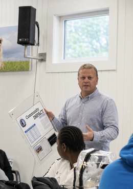

Focused
Four-hour and full-day workshops centered on a specific leadership, decision-making, or problem-solving need.
REAL-WORLD LEADERSHIP & PROBLEM SOLVING
InStride delivers practical, instructor-led training and leadership talks for people who have to make decisions, lead teams, solve problems, and improve the work, not just talk about it.
45–60 minute talks · 4-hour workshops · 8-hour sessions · Customized employer training · Regional and travel delivery
THE INSTRIDE DIFFERENCE
InStride bridges the gap between generic leadership seminars and highly technical training. The focus is on usable thinking, leadership, and problem-solving skills grounded in real operational experience.
HOW INSTRIDE TRAINING WORKS
Sessions are designed around the work participants actually do, with examples, discussion, practice, and tools they can take back to the job.
Four-hour and full-day workshops centered on a specific leadership, decision-making, or problem-solving need.
Discussion, examples, and small-group exercises keep participants engaged and make the learning relevant.
Participants leave with frameworks, language, and tools they can use immediately, not a binder that sits on a shelf.

LEADERSHIP IN ACTION
InStride is built around practical leadership that shows up in the real world.
Jereb brings experience from operations, community leadership, teaching, and workforce development into every workshop and speaking engagement.
The goal is simple: make the learning useful enough to apply the next day.
COURSE CATALOG
Available as focused 4-hour workshops or full-day 8-hour sessions. Programs can be customized around your organization's needs, audience, and real business challenges.
Separate facts from assumptions, challenge bias, evaluate risk, and make stronger decisions with a repeatable approach.
Move beyond recurring symptoms and build a disciplined process for solving and preventing repeat problems.
Build credibility, communication, accountability, delegation, and coaching skills for new and emerging supervisors.
Create clear expectations and ownership while avoiding unnecessary control, confusion, and dependency.
Define problems, contain issues, gather evidence, verify causes, and sustain corrective actions that hold up over time.
Help frontline leaders understand how safety, quality, service, labor, downtime, yield, inventory, cost, and KPIs connect to business performance.
SPEAKING & LEADERSHIP TALKS
Interactive 45–60 minute talks for leadership programs, businesses, chambers and associations, nonprofits, charities, schools, and community organizations.
How effective leaders separate facts, assumptions, emotion, and urgency before making important decisions.
A practical look at ambiguity, difficult conversations, competing priorities, trust, and what leadership really requires.
Why organizations get trapped in firefighting, and what leaders can do to move from recurring symptoms to lasting solutions.
How to build credibility, gain commitment, and move work forward when you don't have formal authority over the people involved.
How leaders create clear expectations, ownership, and follow-through without becoming the bottleneck.
Why everyday leadership behaviors, standards, and follow-through shape culture more than slogans or posters ever will.
Talks can be adapted to the audience, event theme, and challenges your organization is facing.
WHO WE SERVE
InStride works with organizations that want stronger leaders, better problem solvers, and more effective teams.
FOR EMPLOYERS & WORKFORCE PARTNERS
InStride can support a one-hour leadership talk, a single workshop, or a broader development pathway.
✓ Leadership talks and community programs
✓ Frontline supervisor development
✓ Leadership academies
✓ Problem-solving & continuous improvement pathways
✓ Customized employer training
✓ Multi-course certificate programs
ABOUT INSTRIDE
InStride was founded by Jereb Pape to provide practical professional development grounded in the realities leaders face every day.
Jereb Pape is an experienced leader, educator, and problem solver with more than 18 years of experience across operations, manufacturing, continuous improvement, engineering, maintenance and reliability, supply chain, organizational leadership, and workforce development.
His career has spanned Fortune 500 and private-equity-backed organizations, from plant operations with approximately 20 team members to complex sites of more than 750 employees.
Before beginning his civilian career, Jereb served four years in the United States Coast Guard, supporting search and rescue and port security missions.
Jereb has completed labor relations training and has worked in both union and non-union plant environments, providing practical perspective on leadership, communication, employee relations, and organizational dynamics.
He has also taught MBA-level courses at Mount Mercy University, including Methods of Quality Management and Global Methods of Quality Management.
Jereb is a 2023 graduate of Leadership Iowa through the Iowa Association of Business and Industry and served as Co-Chair and Board Member in 2023-24. He is also a member of the Greater Burlington Leadership Class of 2025-26 through the Greater Burlington Partnership.
Jereb holds an MBA and a Master of Strategic Leadership from Mount Mercy University, along with a BBA from Strayer University.
“The objective isn't to deliver another class. It's to help people think better, lead better, and solve the problems getting in the way of the work.”
START A CONVERSATION
Tell InStride about the audience, event, challenge, or skill gap. We can shape a leadership talk, focused workshop, full-day session, or broader development pathway around the need.
jereb.pape@outlook.com
LinkedInBased in southeast Iowa · Available for regional and travel delivery